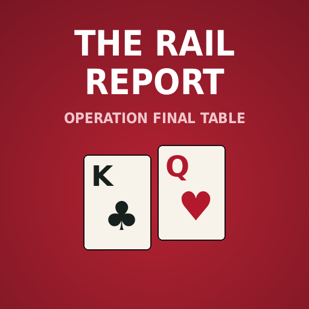

The Rail Report is made from the Rail's reads of the Reserve's own streams and Brad's Day 2 study. These public versions refer to opponents by seat, not by name. Your place in each episode is saved on this device. Tap the download button on an episode to keep it for spots with no signal.